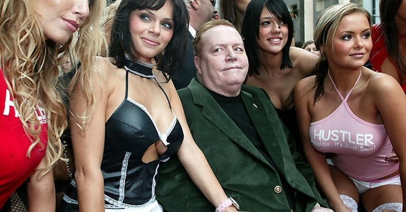

Lario Kingo šou
KAIP MILIJARDIERIAI GYDOSI IMPOTENCIJĄ
Erekcijos disfunkcija yra problema, kuri nesusijusi su pajamų lygiu: arba esi sveikas, arba ne. Pinigai tavo kišenėje bybiui įtakos nedaro. Ar paprastas vyras gali pasinaudoti milijardieriaus paslaptimi, kad gautų akmeninę erekciją?
”Seksas yra nuostabi pramoga, net ir sulaukus pagyvenusio amžiaus. Žinau pagal save, - Laris Flintas.

Laris Flintas yra milijardierius, Hustler pornografinio žurnalo leidėjas ir savo laikų legenda. JAV ir Europoje įvykusi seksualinė revoliucija prasidėjo jo veiksmų. Striptizo klubų tinklas, 5 žmonos, modelių aplinka yra ne gyvenimas, o pasaka, argi ne?
Pirmą kartą Lario Kingo šou nutolsta nuo televizinių rėmų!
Prasidėjo laikas
intymiausiems klausimams!


- Lari, esate vienas skandalingiausių pornografijos pramonės žmonių. Jūsų žurnalas Hustler tapo tikru proveržiu. Ne kartą būdavote teisiamas dėl demoralizavimo, bet išeidavote iš vandens sausas. Kaip taip nutikdavo?
- Visą gyvenimą aš maniau, kad seksas yra natūralus dalykas ir nėra ko čia gėdytis. Na, kas yra neteisėta susijaudinant? Teismų metų aš tiesiog gyniau savo požiūrį. Mano žurnalas yra susijęs su mano mėgstama veikla - seksu. Aš verčiuosi tuo, kas man patinka, o ne dirbu biure.
- 5 kartus buvote vedęs, gavote sužeidimą, tapote neįgalus, tačiau ir toliau turėjote daugybę romanų. Būkime sąžiningi: merginas vilioja jūsų... piniginės dydis?
- Aš turiu kuo pasigirti, ir be pinigų. Anksčiau nuolat būdavau fotografuojant žurnalo modelius. Būdavau susijaudinęs kone kas minutę. Nuolat norėjau dulkintis su pusnuogėmis gražuolėmis. Kartkartėmis vesdavau karščausias moteris. Bet nė vienai iš jų nepakako visiškai patenkinti mano norus.

- Norite pasakyti, kad jų seksualinis aktyvumas buvo mažesnis nei jūsų?
Taip, aš juos tiesiog uždulkindavau iki alpimo. Ir jokie milijonai mūsų nelaikė kartu. Aš visada turėjau viską aukščiausiame lygyje, bet po to, kai serijinis žudikas mane sužeidė, palietęs kirkšnį, prasidėjo problemos su seksu.
Aš gulėdavau ligoninėse, siekdamas visiškai atkurti varpą. Taip truko daugelį metų. Laikui bėgant buvo daugiau nesėkmių: po sužalojimo varpa galėdavo pakilti nuo 2-3-ojo karto, o metams bėgant erekcija beveik dingo. Geriausiu atveju ji prasidėdavo po valandos - pusantros valandos moteriškų glamonių.

Prisimenu vieną atvejį: fotografuojant man patiko viena modelė, pertraukos metu pakviečiau ją į pas save į kambarį. Pusvalandį bandžiau įkišti į ją bybį, bet jis nuolat krito. Mums visai nepavyko. Ši kalytė nusišypsojo ir pasakė, kad vietoj bybio naudoju piniginę ir ja tenkinu moteris.
Man tada buvo labai nemalonu. Savaitgalį išvažiavau iš miesto su verslo partneriu, aš ten papasakojau apie savo problemą. Jis man pasakė, žinai, drauge, ar nesi bandęs ? Visi vyrai jį vartoja kilus tokioms problemoms. Žinot, man pasidarė juokinga: gydytojai man negali padėti, o jis man siūlo savo kapsules. Bet pats užsigalvojau. O gal tikrai padės?

- Kaip viskas baigėsi?
- Aš pamaniau, kad galbūt tai mano paskutinis šansas. Susisiekiau su gydytoju, jis man pateikė šio vaisto tyrimo rezultatus. Tai mane sukrėtė: dauguma vyrų visam laikui atsikratė impotencijos be žalos sveikatai ir jokių operacijų!
- Ar šis vaistas yra kažkas panašaus į Viagra?
Žinoma, ne! Aš vienąkart kvailiai pasiėmiau pabandyti Viagrą. Vakare suvartojau tabletę, o kitądien varpa maudė, pakilo temperatūra ir pasijaučiau bjauriai. Net bijojau, kad turėsiu kviesti gydytojus. Taip, vaikščiojau su stovinčiu bybiu, bet negalėjau jo paliesti: skaudėjo.
- Papasakokite smulkiau apie ?
- Tiesiog papasakosiu savo istoriją, o jūs jau darykite savo išvadas. užsisakiau gamintojo oficialioje svetainėje. Pirmą savaitę visai nieko nepastebėjau, o paskui ryte prabudau ir žiūriu - stovi! Kaip jaunystėj! Aš apsisprendžiau ir paskambinau modelėms. Siaubingai nerimavau: kas bus, jei nepasiseks ir varpa sekso metu nukris? Atvažiavo dvi mergaitės, buvau sukrėtęs, maniau, kad vienos man visai pakaks, o čia reikia dvejas dulkinti. Galų gale mes dulkinomės tikrai tris valandas, mergaitės buvo septintame danguje! Ir aš niekada nebuvau girdėjęs tiek daug riksmų!

- Tikriausiai vaistas turi kokį nors šalutinį poveikį?
Visiškai jokio! Jis veikia nepriekaištingai, patikrinta mano asmeniškai. Jis turi puikų sudėtį, visi gydytojai patvirtina. galima vartoti net su alkoholiu: jame visai nėra chemijos, tik gamtiniai komponentai. Ir jie yra taip gerai parinkti, kad ne tik pagerina erekciją, bet ir ją atstato. Net tokiais liūdnais atvejais, kaip mano.
- Skamba tiesiog fantastiškai! O kur įsigyti ?
- Dabar galima nusipirkti tik per oficialią svetainę, todėl kaina yra tokia maža.
Jei man padėjo, tada esu tikras, kad padės visiems. OIr kad galėtumėte įsitikinti mano žodžiais, aš pats apmokėjau 10 000 pakuočių, kad tavo žiūrovai galėtų nusipirkti jį už pusę kainos.
- Labai ačiū, Lari! Klausimai užduoti ir mes baigiame pokalbį. Iki pasimatymo!